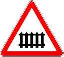
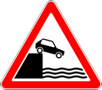
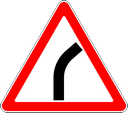
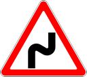
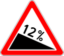
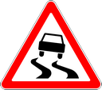
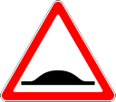
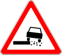

Дорожные знаки
8 групп · 321 знак с описаниями. Выбери группу — внутри карточки знаков и их значение.









Знак предупреждает о приближении к железнодорожному переезду с шлагбаумом. За пределами города или другого населённого пункта знак устанавливают на расстоянии от 150 до 300 метров до переезда. В городе знак будет ближе — на отметке от 50 до 100 метров.
Если расстояние нестандартное, оно указано на табличке дополнительной информации.
Знак не применяется к маршрутным транспортным средствам, следующим по своим маршрутам, и к поездам, движущимся по переезду.
Водители могут пересекать железнодорожные пути только на переездах, пропуская поезда.
а) Нельзя обгонять на переездах и за 100 метров до них.
б) На переезде останавливаться и парковаться запрещено.
Штраф 1000 ₽ или лишение прав 3–6 мес. (ст. 12.10)
все штрафы →Предупреждает о приближении к железнодорожному переезду со шлагбаумом. Водитель обязан снизить скорость и быть готовым остановиться перед шлагбаумом.